# 遥感基本原理
# 电磁辐射原理
# 基本概念
电磁场——电磁波——电磁辐射的概念
电磁场
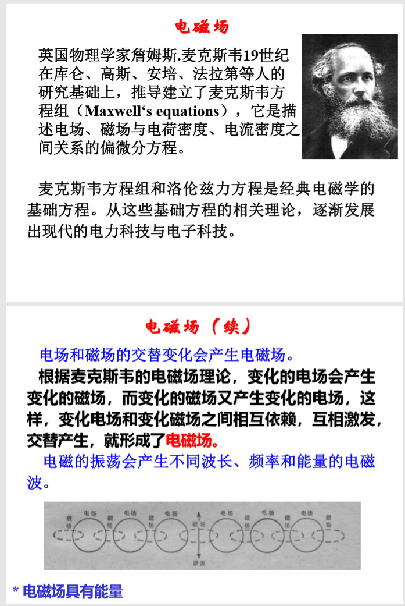电磁波
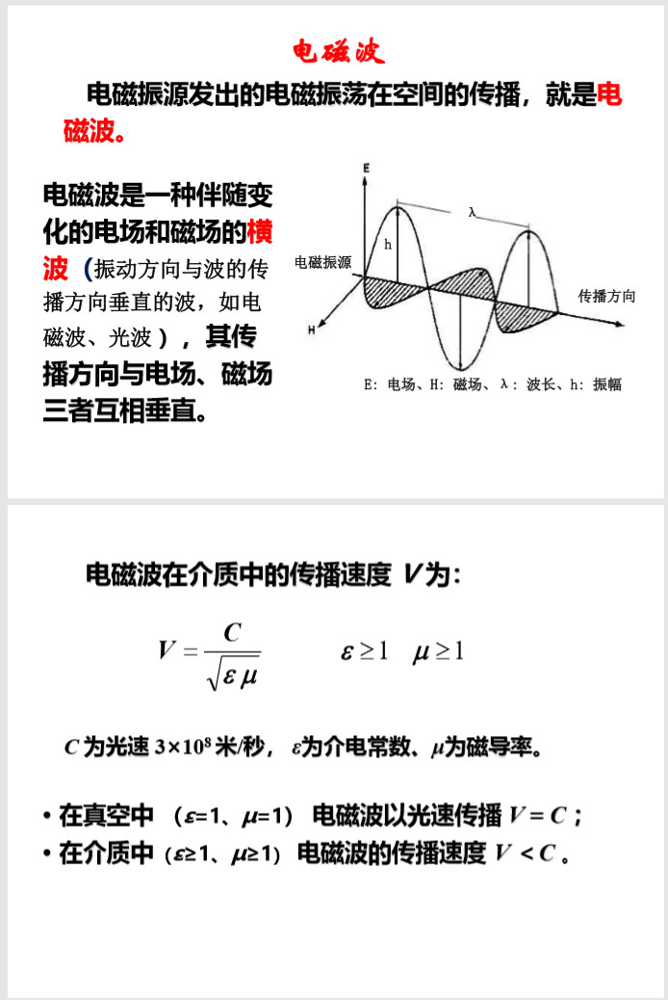电磁辐射
电磁辐射是电磁波在空间的传播，是电磁波传递能量的过程，是能量的一种动态形式。
电磁辐 射是以一种看不见、摸不着的场，当它与物质相 互作用（包括发射、吸收、反射、透射）时可以表现出来。电磁辐射是物质内部电子、原子、分子处于运动状态的一种外在表现形式。
电磁波的传输及电磁现象的基本规律，通过麦 克斯韦（Maxwell）方程式来推导和描述。
描述电磁波的主要参数：
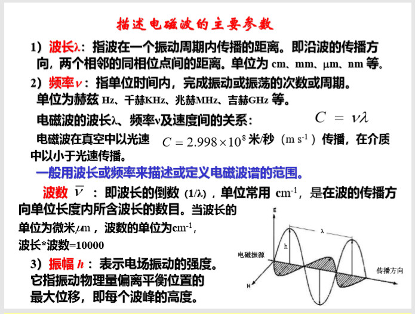
电磁波的性质——波粒二象性
电磁波的吸收、反射与发射实质上是能量转换的一种形式。 电磁波在传播中以及与物质相互作用中，既反映出波动性， 又反映出粒子性，称之为波粒二象性。
波动性：电磁波以波动的形式（光滑连续的波）在空 间传播，用波长、频率、振幅等来描述；表现出波的干涉（波的叠加合成）、衍射、偏振等现象
粒子性：电磁波也是一种以光速传播的粒子流。电磁辐射能以密集的光子微粒流（离散形式）有规律的运动， 如表现出光电效应、黑体辐射等现象。
电磁波的波动性
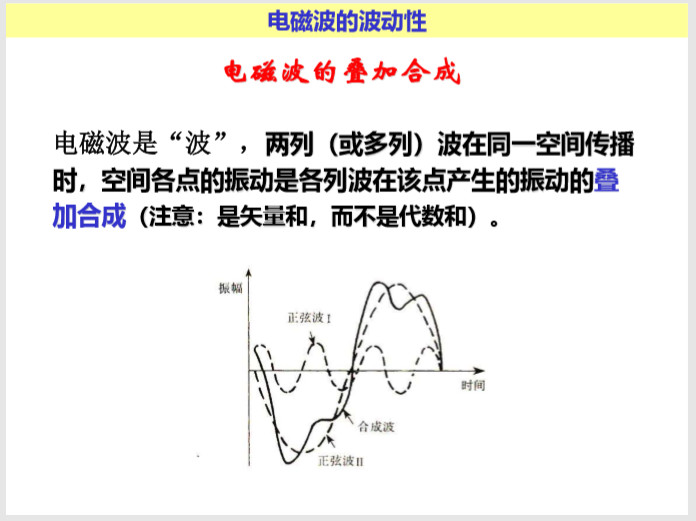波动性的体现：
干涉（interference）

衍射（diffraction）
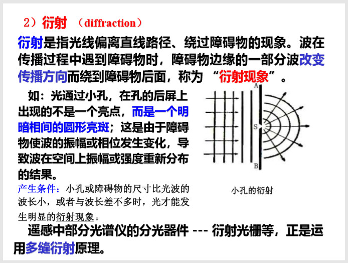偏振（Polarization，极化）
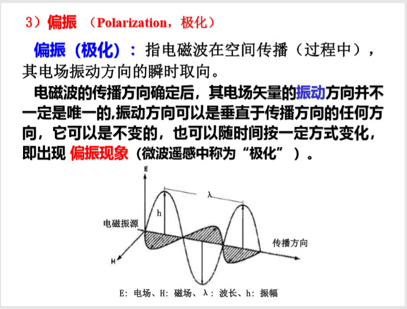
电磁波的粒子性
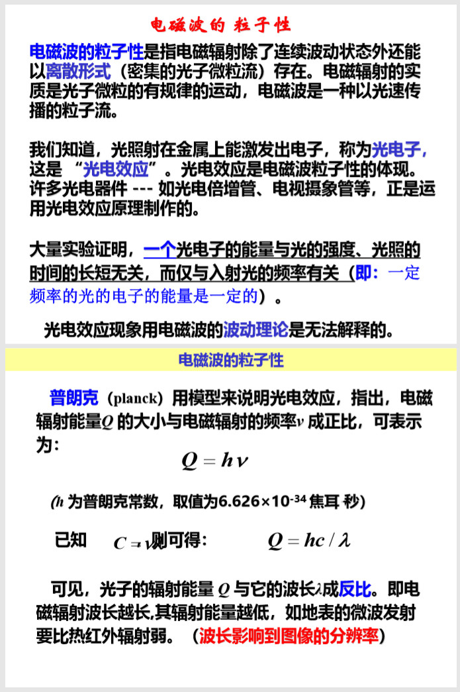总结
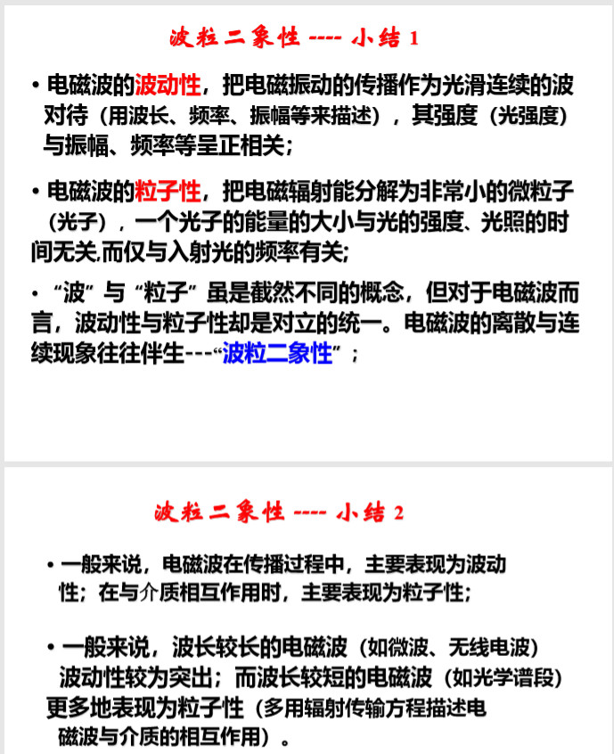
电磁波的特性总结
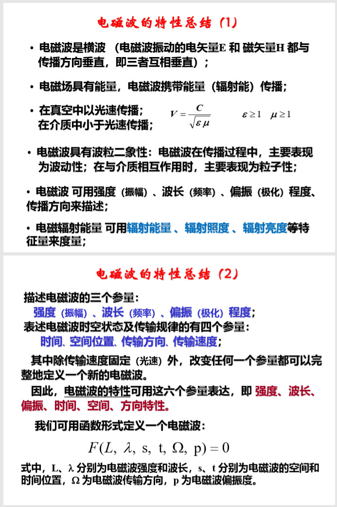电磁辐射的度量
不同辐射源可向外辐射不同强度、不同波长的辐射能量。 用遥感手段探测物体，就是对物体辐射能量的测定与分析， 遥感涉及到一系列复杂的过程和一些常用的物理量。
太阳辐射
太阳辐射是太阳以电磁波或粒子形式发射的能量。
太阳 辐射的大部分能量集中于近紫外——中红外（0.31~3µm） 区间，约占全部能量的99.0%。
因此，太阳辐射的能量以短波辐射为主
地球辐射：地球（包括大气）发射的电磁辐射。能量主要集中在长波辐射范围内。
辐射能量Q
辐射能量是电磁波中电场能量和磁场能量的总和，即电磁场所具有的能量，称之为辐射能量，单位为焦耳（J）、 卡（cal）。
理解：
任何物体都可以是辐射源。它既可能自身发射能量（即发射辐射，又称热辐射），也可能被外 部能源激发而辐射能量（即反射辐射）。
辐射通量
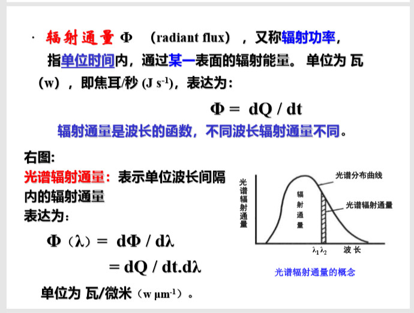辐射出射度M
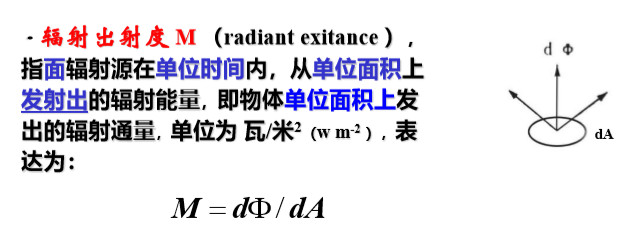辐射照度E
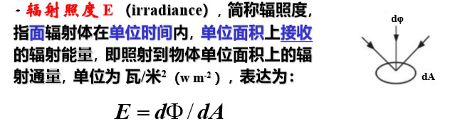辐射亮度L
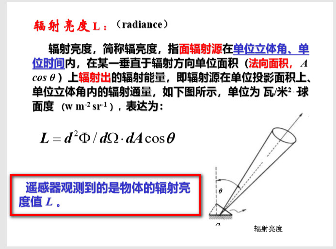辐射亮度L与辐射出射度M的关系：
辐射亮度的法向分量对整个半球面立体角(Ω=2\pi)的积分是辐射出射度
# 电磁辐射定律
引子
黑体与黑体辐射
黑体：是一个完全的吸收体和完全的发射体，即吸收率和发射率均为1的物体（无反射，也无透射）；
它是一个 自然界并不存在的假设的理想辐射体；可以由人工方法 制作，它的行为表现可被实验室设备所模拟。
黑体辐射：遵循普朗克辐射定律、斯特藩—玻耳兹曼辐射定律 （Stefan—Boltzmann）和维恩位移定律
定律
普朗克辐射定律
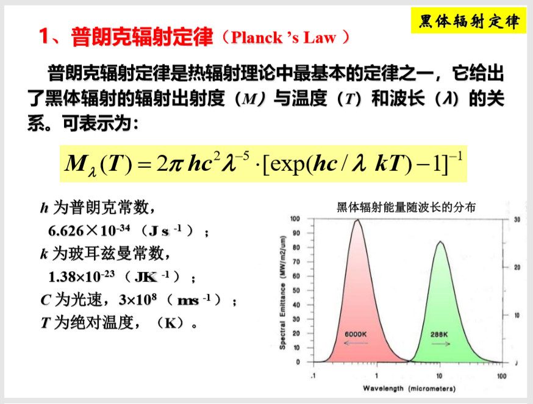斯特藩—玻耳兹曼辐射定律
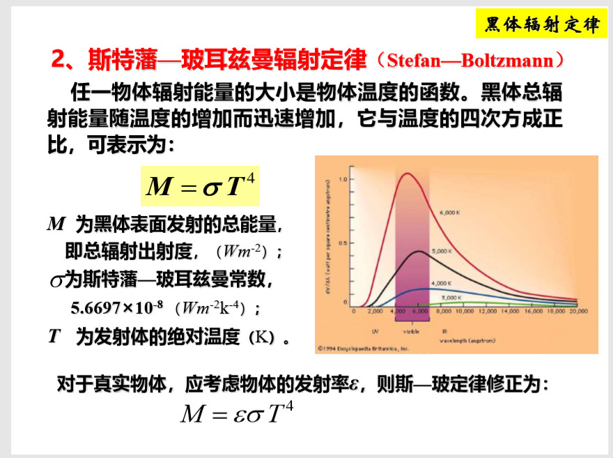维恩位移定律
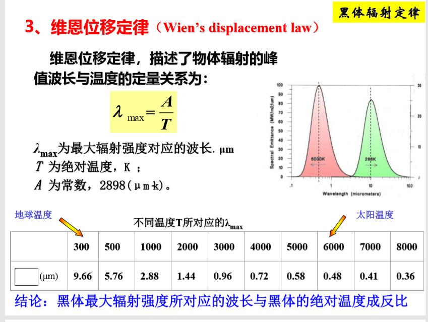用于判断分析不同温度需要时，所选择最大的波长
总结
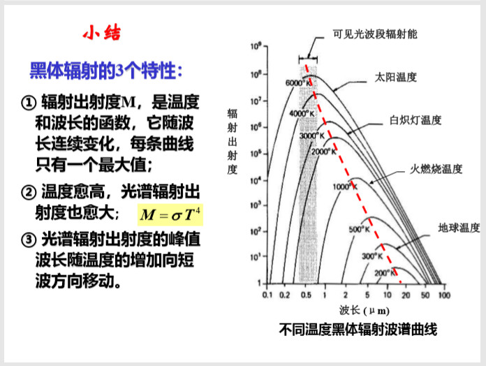
# 电磁波的传输与相互作用
# 太阳辐射与地球辐射
# 电磁波与大气层的相互作用
大气的主要成分
主要包括氮（78.08%）、氧（20.95%）和各种微量气体 — — 如二氧化碳、甲烷、氧化氮、氢、臭氧、水汽等。
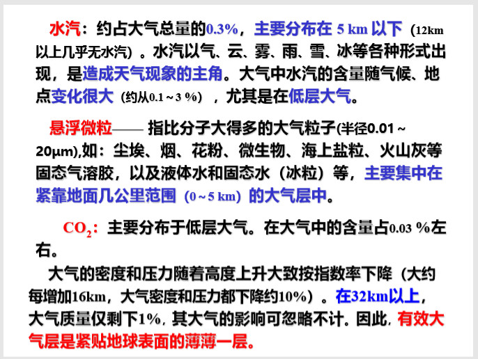电磁波与大气层的相互作用，主要有两种基本的物理过程，大气散射和大气吸收。
大气散射
散射 —— 指电磁波在非均匀或各向异性介质中传播时， 改变原来传播方向的现象。
散射 —— 指电磁波在非均匀或各向异性介质中传播时， 改变原来传播方向的现象。
选择性散射——散射强度与波长有关
瑞利散射：当微粒的直径d<<λ时出现。
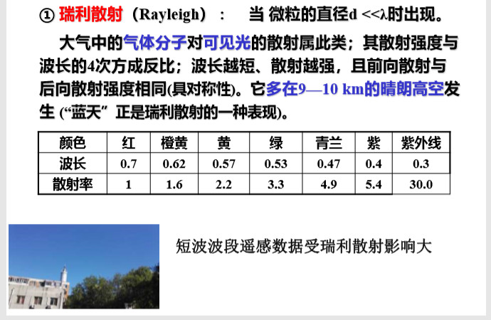米氏散射：当微粒的直径d≈λ时
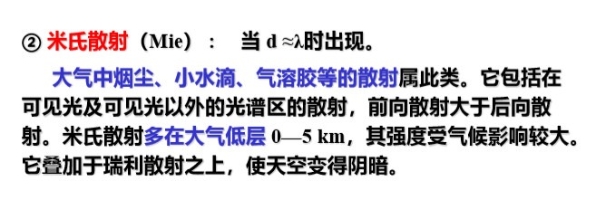
无选择性散射——散射强度与波长无关
当 d>>λ时，出现无选择性散射（散射颗粒很大或电磁波 的波长相对散射颗粒比较短）。
大气中云、雾、水滴、尘埃(一般直径 5—100 μm )的散射属此类。它大约同等的散射所有可见光、近红外波段。因此， 云、雾呈白色、灰白色。
大气散射对遥感的影响
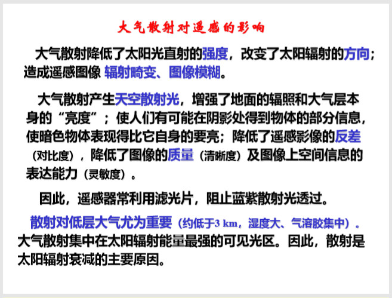大气吸收
大气中主要有$O_3、CO_2和H_2O $三种气体对太阳辐射能的吸收最强。
大气纠正
基于图像特征模型
即通过简单的假设，不需要进行实际地面光谱及大气环境参数的测量，仅利用图像自身信息，对遥感数据进行相对 。
- 暗目标法
- 回归分析法
- 图像波段间的数学运算
地面线性回归经验模型
基于大气辐射传输模型
# 电磁波与地表的相互作用
反射
- 镜面反射
- 漫反射
- 方向反射
区别反射率与反照率
吸收
透射